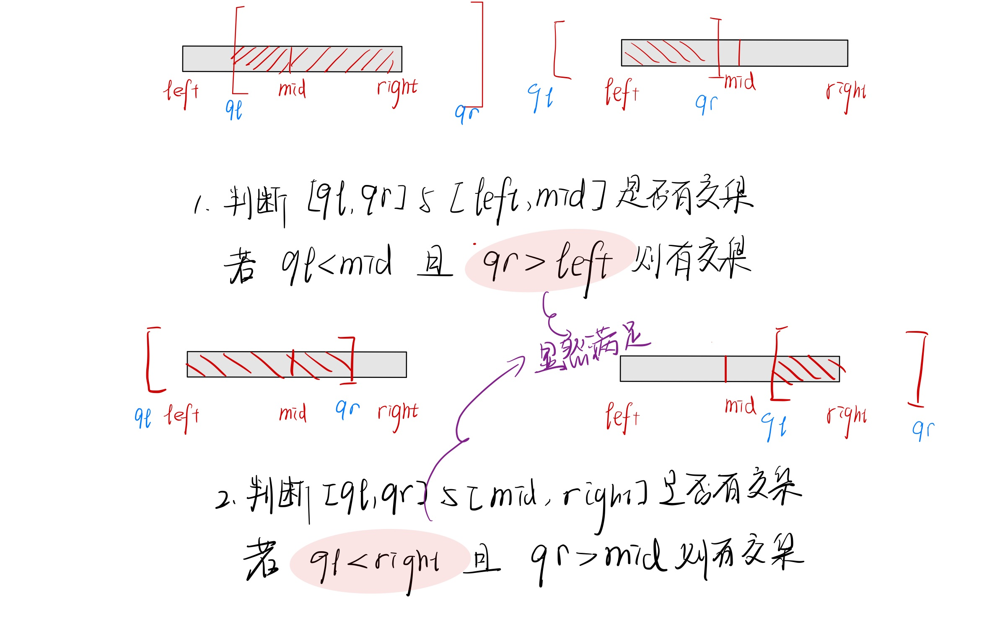

classSegTree_Min{public://初始化 其中a从0开始存，内部的T从1开始存 T[1]代表着根节点voidInit(int a[], int Len);//查询区间内最小值
int Query(int ql, int qr);//单节点更新voidUpdate_Node(int x, int value);private:
int*T;//动态数组，用来储存新建的树，大小为N*4
int*In;//动态数组，用来储存原数组，大小为N+1
int N;//求两个子树的最小值
int PushUp(int now);//快速求左孩子
int Lchild(int x);//快读求右孩子
int Rchild(int x);//构建线段树，其中left和right对应着在原数组的构建位置voidBuild(int now, int left, int right);
int QueryMin(int now, int left, int right, int ql, int qr);voidUpdate_Node_Change(int now, int left, int right, int x, int value);};
辅助函数
int SegTree_Min::Lchild(int x){return x <<1;}
int SegTree_Min::Rchild(int x){return(x <<1)|1;}
建树：
voidSegTree_Min::Init(int a[], int Len){this->N=Len;this->T=newint[this->N*4];this->In=newint[this->N+1];for(int i =1; i <=this->N; i++){this->In[i]= a[i -1];//把外部数组a输入到内部的in中}this->Build(1,1,this->N);//从根节点开始建树return;}voidSegTree_Min::Build(int now, int left, int right)//now表示当前所在的树上节点//[left,right]表示子树所对应的原数组区间{//如果是叶子结点的话，直接赋值if(left == right){this->T[now]=this->In[left];return;}
int mid =(left + right)/2;//左右子树各自建树Build(this->Lchild(now), left, mid);Build(this->Rchild(now), mid +1, right);this->T[now]=this->PushUp(now);//建完树后需要回头更新return;}
查询最小值
我们总结一下，线段树的查询方法：
目标：选出一些区间，使他们相连后恰好覆盖整个查询区间[ql,qr]
如果这个区间被完全包括在目标区间里面，直接返回这个区间的值
如果这个区间的左儿子和目标区间有交集，那么搜索左儿子
如果这个区间的右儿子和目标区间有交集，那么搜索右儿子
int SegTree_Min::Query(int ql, int qr)//对应的原数组的查询区间{returnthis->QueryMin(1,1,this->N, ql, qr);}
int SegTree_Min::QueryMin(int now, int left, int right, int ql, int qr){//如果这个区间被完全包括在目标区间里面，直接返回这个区间的值if(ql <= left && qr >= right)returnT[now];
int mid =(left + right)/2;
int minn =INT16_MAX;//如果这个区间的左儿子和目标区间有交集，那么搜索左儿子if(ql <= mid)minn =min(minn,QueryMin(this->Lchild(now), left, mid, ql, qr));//如果这个区间的右儿子和目标区间有交集，那么搜索右儿子if(qr > mid)minn =min(minn,QueryMin(this->Rchild(now), mid +1, right, ql, qr));return minn;}

单点修改
voidSegTree_Min::Update_Node(int i, int value){//下沉找到区间后，再pushup上来更新上面的结点this->Update_Node_Change(1,1,this->N, i, value);return;}voidSegTree_Min::Update_Node_Change(int now, int left, int right, int x, int value){//x目标节点 now 当前树上节点 【left，right】当前对应区间 value修改的值 if(left == right){this->T[now]+= value;//只修改叶子结点return;}
int mid;
mid =(left + right)/2;if(x <= mid)this->Update_Node_Change(this->Lchild(now), left, mid, x, value);elsethis->Update_Node_Change(this->Rchild(now), mid+1, right, x, value);//修改之后，需要回头修改之前的值this->T[now]=this->PushUp(now);return;}
int SegTree_Min::PushUp(int now){//这里可以通过修改pushup来调整线段树储存的信息究竟是什么returnmin(this->T[this->Lchild(now)],this->T[this->Rchild(now)]);}